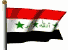
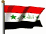

The Country & People of Iraq
This page contains links to sites in Iraq and Iraq related sites.
For Middle East, North Africa, Arab and regional information visit Arab Countries

The Country & People of Iraq
This page contains links to sites in Iraq and Iraq related sites.
For Middle East, North Africa, Arab and regional information visit Arab Countries
History
Modern Iraq is approximately coextensive with ancient Mesopotamia, and prior to the Arab conquest in the 7th cent. AD it was the site of a number of flourishing civilizations, including Sumer, Akkad, Assyria, and Babylonia. In the 8th cent., as capital of the Abbasid caliphate, Baghdad became an important center of learning and the arts. Mesopotamia fell to the Ottoman Turks in the 16th cent.
The British invaded Iraq in World War I, and in 1920 the country became a League of Nations mandate under British administration. Iraq was made a kingdom under Faisal I in 1921, and the British mandate was terminated in 1932, although British military bases remained. Meanwhile, the first oil concession had been granted in 1925, and in 1934 the export of oil began. Domestic politics were marked by turbulence, and the country experienced seven military coups between 1936 and 1941.
Following an army coup in 1958, Iraq became a republic under Gen. Abdul Karim Kassem. The chronic Kurdish problem flared up in 1962, when tribes demanding an autonomous Kurdistan gained control of much of N Iraq. The rebellion collapsed (1975), but intermittent warfare continued. In 1968 a coup brought the Ba'ath party to power, and in 1979 Saddam Hussein became party leader and Iraq's president. Opposition within Iraq grew among the Shiites, who were the majority of the population yet were excluded from political control.
Iraq launched (1980) a costly war against Iran that ended (1988) in a stalemate. In 1990 Iraq invaded Kuwait, which it had previously claimed, provoking the Persian Gulf War; economic sanctions were also imposed, and remained in effect long after the war, although they were modified in 2002 to emphasize military-related goods. The war ended (1991) with Iraq ousted from Kuwait. Following the war, Iraqi Shiites and Kurds revolted. The uprisings were crushed, but both groups were provided (1992) with limited UN protection, which proved ineffective in the case of the Shiites; the Kurds established a self-proclaimed autonomous region in N Iraq. An Iraqi military buildup near the Kuwait border in 1994 led to the deployment of U.S. troops in Kuwait.
In 1996, Iraq reached an accord with the UN that allowed it to sell $1 billion worth of oil every 90 days, with the money set aside for food and medicine and compensation to Kuwaitis. Iraq destroyed at least some chemical weapons under UN supervision, but inspections imposed as part of the conditions for ending the Gulf War found evidence of chemical warheads and of a program to produce materials for nuclear weapons. Beginning in late 1997, Iraq resisted cooperating with the weapons inspections; this led to a U.S. military buildup in the Persian Gulf. U.S. and British bombing raids against Iraq began in Nov. 1998 and have persisted on a smaller scale.
In 2002 the U.S. threatened military action against Iraq over its failure to permit weapons inspections, leading Iraq to announce that inspectors could return. In November the UN established a strict timetable for the resumption of inspections and Iraq permitted inspectors to return. Although inspectors did not find evidence of weapons or weapons programs, Iraq failed to assist in them in their attempts to determine that such programs no longer existed. Meanwhile, the U.S. and Britain continued to prepare for war with Iraq, and in Mar. 2003 demanded that Hussein step down or face an invasion.
On Mar. 19, 2003, they launched an airstrike aimed at Hussein personally, and sizable ground troops began invading the following day. After less than a month of fighting, Hussein's rule had collapsed, and U.S. and British forces had established a controlling presence in the major urban areas, although pockets of resistance remained. Hussein survived the war and went into hiding, and guerrilla attacks by what were believed to be Ba’ath loyalists and Islamic militants became an ongoing problem in the following months, largely in Sunni-dominated central Iraq. The Kurdish-dominated north and Shiite-dominated south were generally calmer. L. Paul Bremer 3d was appointed as civilian head of the occupation. UN economic sanctions were lifted in May, 2003, and in mid-July an interim Governing Council consisting of representatives of Iraqi opposition groups was established. Nonetheless, civil order and the economy appeared to be being restored at a slow pace that threatened to create animosity toward the occupying forces. The cost for rebuilding Iraq was estimated by Bremer in late 2003 to be as much as $100 billion over three years. Meanwhile, U.S.-British failure to find biological or chemical weapons led to charges that Anglo-American leaders had exaggerated the Iraqi threat to international security.
In Oct., 2003, the UN Security Council passed a British-American resolution calling for a timetable for democratic self-rule in Iraq to be established by mid-December. Events, however, led the United States to speed up the process, and in November the Governing Council endorsed a U.S.-proposed plan that called for self-rule in mid-2004 under a transitional assembly, which would be elected by a system of caucuses. However, many Shiites objected to this because it would not involve elections; they feared a diminished voice in the government and greater U.S. influence if caucuses were used to choose the assembly. Hussein was finally captured by U.S. forces in Dec., 2003.
In Jan., 2004, U.S. arms inspectors reported that they had found no evidence of Iraqi chemical or biological weapons stockpiles prior to the U.S. invasion; the asserted existence of such stockpiles had been a main justification for the invasion. (Subsequently, a Senate investigation criticized the CIA for providing faulty information and assessments concerning Iraq’s weapons. In addition, U.S. inspectors concluded in Oct., 2004, that although Hussein never abandoned his goal of acquiring nuclear weapons, Iraq had halted its nuclear program after the first Persian Gulf War.) An interim constitution was signed by the Governing Council in March, but many Shiites, including nearly all those on the council, objected to clauses that would restrict the power of the president and enable the Kurds potentially to veto a new constitution.
At the end of March, Sunni insurgents in Fallujah attacked a convoy of U.S. civilian security forces, killing four and desecrating the corpses, which prompted a U.S. crackdown on the town, a center of Sunni insurgency. The fighting there in April resulted in the most significant casualties since since the end of the invasion; the conflict ended with the insurgents largely in place. At about the same time, U.S. moves against the organization of a radical Shiite cleric, Moktada al-Sadr, led him to call for an uprising. There was unrest in a number of cities in S central and S Iraq, but by mid-April al-Sadr’s forces were in control only in the area around An Najaf, a city holy to Shiites, and a cease-fire took effect in June.
Revelations in May of U.S. abuse of Iraqi prisoners at Abu Ghraib prison in late 2003 and early 2004 sparked widespread dismay and outrage in Iraq, the United States, and the world. The president of the Governing Council was assassinated the same month. In June, the United Nations endorsed the reestablishment of Iraqi sovereignty, and at the end of the month, Iyad Allawi, a Shiite, became prime minister and Sheik Ghazi Ajil al-Yawar, a Sunni, president as the interim constitution took effect. Saddam Hussein and 11 other former high-ranking Iraqi officials were formally turned over to the new government and were arraigned.
Large-scale fighting with al-Sadr’s militia occurred again in August, centered on An Najaf and, to a lesser degree, Sadr City, a Shiite section of Baghdad, but the militia subsequently abandoned An Najaf and fighting ceased. By October al-Sadr had shifted to converting his movement into a political force. Also in August, a 100-member National Council, responsible for overseeing the interim government and preparing for elections in 2005, was established. In central Iraq, where a number of Sunni urban areas had been all but ceded to insurgents, U.S. forces began operations to establish control in the fall of 2004. Estimates of the insurgents’ numbers, including foreign guerrillas, ranged from 8,000 to 12,000. Some insurgents also resorted to taking hostages and beheading them. The ongoing violence in Iraq continued to hamper reconstruction, as a lack of security hindered rebuilding and security needs diverted money away from rebuilding.
In the Jan., 2005, elections for the transitional National Assembly, which would write a new constitution, the United Iraqi Alliance, a Shiite coalition supported by Ayatollah Sistani, won nearly half the vote. A Sunni, Hajim al-Hassani, became speaker of the National Assembly; a Kurd, Jalal Talabani, became president; and a Shia, Ibrahim al-Jaafari, was chosen as prime minister. The constitution was strongly endorsed by Shiites and Kurds and as strongly rejected by Sunnis, who voted in larger numbers this time. The formation of a government, however, became protracted, when Sunnis and Kurds objected to the Shiite religious parties’ selection of Jaafari as prime minister. Finally, in Apr., 2006, Jaafari stepped aside, and Nuri Kamal al-Maliki, a long-time aide of Jaafari’s, was chosen for the post. The killing, in June, of Abu Musab al-Zarqawi, the head of Al Qaeda–aligned foreign insurgents, was a notable success for U.S. forces, but did little to diminish the violence in Iraq. Some 1.2 million Iraqis were estimated to have fled the country by mid-2006, seeking refuge in Jordan, Syria, and other nations.
By late 2006, with roughly 3,000 Iraqis dying every month, worry over mounting sectarian violence and fear of civil war began to outweigh concerns over insurgents. There was increasing doubt on the part of the United States over the ability of Maliki’s government to deal with the rising sectarian violence, and a strain in the relations between the governments of the two nations was evident publicly. In Oct., 2006, the parliament passed legislation establishing a process by which provinces could join together, beginning in 2008, to form autonomous regions; the law was opposed by the Sunni parties and Shiite parties based predominantly in central Iraq. At the end of Dec., 2006, Saddam Hussein was hanged for crimes against humanity; the undignified circumstances surrounding his execution provoked outrage from many Sunnis in Iraq and dismay from the U.S. and other nations.
In Jan., 2007, two of Saddam;s close aides were hanged on the same charges. Also in January, U.S. President Bush announced that he would send an additional 20,000 troops to Iraq, the “surge,” which reached its plateau in June and also focused on Baquba and Diyala prov., appeared to have suppressed Sunni and Shiite death squads, but suicide bombings continued. Demonstrations in April by al-Sadr’s supporters called for U.S. forces to leave Iraq, and his party subsequently withdrew from the cabinet. Other parties, however, generally rejected setting a timetable for U.S. withdrawal.
In Aug., 2007, there was an outbreak of fighting between Shiite militias that was generally blamed on Moktada al-Sadr's Madhi Army; it was especially deadly in Karbala. Sadr's party withdrew from the governing coalition in September. Despite these events and other continuing violence, the overall level of violence decreased significantly in much of Iraq as the second half of 2007 progressed. The political and economic measures, however, that were intended to accompany the surge were largely unaccomplished at year's end.
Also in the second half of 2007, Turkey became increasingly confrontational in its calls for an end to the presence of Turkish Kurdish (PKK) rebel bases in N Iraq. The PKK forces, whose presence was, at a minimum, tolerated by Iraqi Kurds, had mounted increasing attacks in Turkey. Both the Iraqi and U.S. governments pressured Iraqi Kurds to close the bases; Turkey mounted raids and shelled N Iraq beginning in October, and mounted a more significant ground incursion in Feb., 2008.
In Mar., 2008, Maliki attempted to establish central government control over Basra by using Iraqi troops to disarm militias there. Sadr's militia resisted, and fighting erupted in Basra and spread to Sadr City in Baghdad and other cities in Iraq. Several hundred died in the strife before Sadr declared a cease-fire after mediation by Iran; the resolution of the conflict offered new evidence of Iran's influence among Shiites in Iraq. Control over Basra was established in April with U.S. and British help, and that month Iraqi and U.S. troops mounted a new effort to establish government control over Sadr City that ended successfully in May after a cease-fire agreement was reached.
The U.S. troop surge officially ended in July, although an increased number of support troops remained in Iraq. Violence had decreased, and the Iraqi army was proving increasingly effective and confident. In addition, the cease-fire by Sadr's militia (extended indefinitely in Aug., 2008) and increasing Sunni rejection of Al Qaeda contributed to improved security in many parts of Iraq. Also by July, U.S.-led coalition forces had turned over control of more than half Iraq's 18 provinces to the Iraqi government; additional provinces came under Iraqi control in the following months, and by the end of 2008 more than two thirds were under government control.
July was marked as well, however, by dissension over a new provincial election law because it treated the ethnic groups in Kirkuk's province equally for the purposes of interim governing. The Kurds objected that the law diminished their influence in the province compared to their numbers there, and President Talabani (a Kurd) and one of the country's two vice presidents vetoed the law. Not until September was an election law passed. The difficulties over the law were part of the increasing tensions between Kurds and the central government over the status of Kirkuk, control of the income from oil in the Kurdish region, and other issues.
An agreement concerning the terms under which U.S. forces would remain in Iraq after the end of 2008 was rejected by the Iraqi cabinet in Oct., 2008, but the cabinet approved the agreement with modifications the following month.
In Dec., 2008, that agreement and one concerning allied troops in Iraq were finalized; under the agreements U.S. forces would be withdrawn by the end of 2011 and other foreign forces by mid-2009.
In Feb., 2009, U.S. President Obama said that most U.S. forces would be withdrawn from Iraq by Aug., 2010. The agreements were seen as strengthening Prime Minister Maliki and further undermining Moktada al-Sadr, and in the Jan., 2009, provincial elections, Maliki's coalition emerged as the strongest political grouping.
Iraqi forces assumed responsibility for security in urban areas in June, 2009; the process had begun in Jan., 2009. The government in August postponed for a year the census planned for Oct., 2009, out of fear that it would inflame ethnic tensions. A parliamentary election law was finally approved in Dec., 2009, after much difficulty, including a veto by the Sunni vice president in order to secure greater representation for (the largely Sunni) Iraqi refugees.
The elections themselves, originally slated for Jan., 2010, were rescheduled for March; Allawi's secular coalition narrowly placed first, followed by Maliki's nominally secular nationalist coalition and Jaafari's Shiite coalition (with Sadr's party forming the principal component of the last); Maliki's grouping subsequently alleged that there had been significant irregularities. A large number of candidates were disqualified because of alleged links to the Ba'ath party, but in at least some instances those links were old and tenuous. Sunnis, who voted in much greater numbers than in 2005, largely supported Allawi's grouping; no coalition secured enough seats to rule alone. The Maliki and Jaafari groupings subsequently formed a coalition but remained short of an absolute majority, and a new government was slow to be formed. In Aug., 2010, the last U.S. combat brigade left Iraq, and U.S. combat operations officially ended, but some 50,000 U.S. troops were expected to remain until the end of 2011. In early 2011 Iraq, like other Arab nations, experienced large antigovernment demonstrations, as Iraqis in a number of cities protested against corruption and a lack of jobs.
Beginning in Dec., 2012, Sunnis mounted protests against perceived mistreatment; in a number of instances protesters were killed by government troops. As tensions escalated in 2013, aggravated in part by Shiite support for Syria's government and Sunni support for Syria's rebels, the number of deadly ethnic attacks and clashes increased; the year proved to be the most deadly in five years.
Clashes over the army's removal of a Sunni protest camp in Ramadi in late December led to the occupation of Ramadi, Falluja, and other towns in Anbar prov. by the Islamic State in Iraq and the Levant (ISIL), Sunni Islamist militants who were an outgrowth of Al Qaeda–aligned forces in Iraq; they subsequently fought in the Syrian civil war, where their reputation for brutality and their differences with Al Qaeda's leadership led to a break with Al Qaeda. Control of the region continued to be contested into 2014 as government forces moved slowly against the militants, but in June ISIL forces made rapid advances in other Sunni-dominated areas, taking Mosul, Tikrit, and other cities and contesting other locations.
In July ISIL renamed itself the Islamic State (IS) and declared the establishment of a caliphate in areas it controlled in Syria and Iraq. The collapse of many army units, weakened by incompetent commanders appointed by the government, forced the government to turn to Shiite militias and the Iranian Revolutionary Guards for forces. Kurdish forces took control of Kirkuk and some areas neighboring Kurdistan when the army fled the region. Beginning in August, the United States and other nations militarily supported forces fighting against the IS, mainly through air strikes, and gains by the IS subsequently slowed or were reversed.
The Apr., 2014, parliamentary elections resulted in a plurality for Maliki's coalition. In June, the Sunni militant successes increased Sunni and Kurdish demands for the replacement of Maliki by a new prime minister. A new president, moderate Kurdish politician Fouad Massoum, was elected in July, 2014. Massoum subsequently named Haider al-Abadi, a Dawa party member, as prime minister, and a new government was formed in September.
In Dec., 2014, the government and the Kurdish region reached an agreement on sharing the revenues from oil in areas controlled by the Kurds; the government also agreed to allow Kurdish forces to be resupplied with weapons. By Apr., 2015, government forces, supported by Shiite militias with Iranian advisers and combat forces and by air strikes by and aid from the United States, Iran, NATO, and others had made some significant gains in some areas against the IS, but Shiite militias were accused of carrying out retribution against Sunnis in areas where the IS was forced out. In May, IS forces captured Ramadi, but the government regained it at the end of 2015. Kurdish forces also made gains against the IS in N Iraq in late 2015.
Since World War I the Kurds have struggled unsuccessfully in the various countries in which they live for self-determination and independence. In 1946 a short-lived, Soviet-backed Kurdish republic was formed in Iran. There were Kurdish uprisings in Iraq in the 1960s, 70s, and 80s. After the Persian Gulf War, Kurdish groups again rose against Iraq but were crushed, and perhaps 1.5 million fled to Turkey and Iran. Returning under UN protection, they established (1992) an autonomous region in N Iraq, but in 1994 fighting erupted among the rival Kurdish factions, and control of the area is divided between two rival groups.
Iraqi Kurds aided U.S.-British forces in 2003 in their war to oust Saddam Hussein from power. In Turkey, Kurdish guerrillas began fighting the government in the mid-1980s, and in 1992 Turkey mounted a concerted attack on the rebels. In 1995 Turkish forces invaded N Iraq in an attempt to destroy guerrilla bases and supplies. The head of the Kurdish guerrillas was arrested by Turkish officials in 1999 and sentenced to death for treason; in 2000 the guerrillas announced they would end their attacks. Some 23,000–30,000 people may have died in the 15-year war. There was fighting in the early 1990s between Turkish and Iraqi Kurds as well and Kurdish unrest in Syria in 2004, and Syria and Iran in 2005.
Beginning in Oct., 2007, Turkey launched a series of attacks into N Iraq, including a significant ground incursion in Feb., 2008. Some 40,000 people are thought to have died in Kurdish-Turkish fighting since the mid-1980s. The legal Democratic Society party, which called for expanded rights for Kurds and autonomy for largely Kurdish SE Turkey, was the principal civilian Kurdish voice in Turkey, and in the most recent parliamentary elections (2007), it won 20 seats. In 2009, however, the party was banned by Turkey's constitutional court for allegedly having links with the PKK and some prominent members of the party were arrested, leading to increased tensions. The party's lawmakers regrouped as the Peace and Democracy party in 2010, and candidates associated with the party won 36 seats in 2011.
In the Syrian civil war that began in 2011, the Kurds there were not clearly aligned with the government or the rebels, seeking mainly instead to establish some sort of autonomy, but after the rise of the IS in Syria and Iraq in 2014 the Kurds found themselves engaged in intense fighting with the IS, notably at Kobani (Ayn al-Arab). Kurdish forces subsequently made advances against the IS in both Syria and Iraq; Kurds at times found themselves attacked by Turkey as they moved against the IS in N Syria.
General Info
Cities, towns, municipalities, places, flag, maps, useful Information....
Business
Economy, reports, statistics, banks, directories, jobs, investment, promotion....
Culture
General resources, heritage, art, literature, photography, cinema, music, song, dance, cultural, scientific,
environmental, sporting entities & info....
Education
Schools, colleges, academies, universities, polytechnics, institutions, research, resources, projects....
History
Ancient & modern history, human rights, politics & political parties, related sites, articles....
Media
Newspapers, magazines, news, newsletters, news agencies, radio, TV, internet, articles, reports, cartoons....
Organizations
Government, ministries, overseas missions, embassies, corporations, organizations, industrial entities, centers,
public hospitals, institutions, societies, foreign entities....
Travel
Airlines, air, sea & coach charters services, travel, tours, guides, hotels, resorts, inns, hostels, health,
travel tips, weather....
Gateways
Gateways, search engines and directories to country related sites and information....
Arab Countries
Arab World: Middle East, North Africa, Arab and regional information. Resources to other Arab countries....
Cities, Towns, Municipalities & Places
Flag, Maps, Useful Information....
Banks
Directories, Job Opportunities
Investment & Promotion....
Art, Literature, Photography, Cinema....
Music, Song & Dance....
Cultural, Scientific, Environmental, Sporting Entities & Info
Institutions & Organizations
Research, Resources & Projects
Human Rights, Politics & Political Parties....
Related Sites, Articles....
OnLine News, Newsletters, News Agencies....
Radio, TV, Internet....
Articles, Reports, Cartoons....
Corporations, Organizations, Public Hospitals and Industrial Entities
Centers, Institutions, Societies....
Foreign Entities
Travel, Tours, Guides.... More country info
Hotels, Resorts, Inns, Hostels....
Health & Travel Tips
Weather....
Please link to this page.
https://www.hejleh.com/countries/iraq.html
For comments, reports of deadlinks and adding your URL